들어가기교과서 228쪽
이 단원을 배우면
· 태양계를 구성하는 천체의 특징을 설명할 수 있다.
생각 깨우기태양계에는 어떤 천체가 있을까?
지구가 속한 태양계에는 우리가 알고 있는 천체 말고도 여러 종류의 천체가 있다. 알고 있는 천체를 모두 말해 보자.
태양계에는 스스로 빛을 내는 태양과 지구, 화성과 같은 행성, 달, 혜성 등의 천체들이 있다.
태양계
태양계는 태양, 행성, 왜소 행성, 소행성, 혜성, 위성 등으로 이루어져 있다.
태양계 구성 천체 자료 수집 및 분석하기교과서 228~229쪽 · 탐구 (모둠 조사)
탐구디지털목표와 준비
목표 | 태양계 구성 천체의 자료를 수집하여 분석할 수 있다.
준비물 | 스마트 기기, 참고 도서
과정 1모둠 역할 나누기
조사할 천체는 태양, 행성, 왜소 행성, 소행성, 혜성, 위성 6가지이다. 모둠 인원에 맞게 한 사람이 맡을 천체를 정해 보자.
과정 2수집한 자료를 정리하여 모둠원들과 공유해 보자. 교과서 예시
특징
- 스스로 빛을 낸다.
- 태양계의 중심에 위치한다.
- 주로 수소와 헬륨으로 이루어져 있다.
특징
- 모양이 둥글다.
- 행성에 비해 질량과 크기가 작다.
예: 명왕성, 세레스
특징
- 행성 주위를 공전한다.
예: 달, 이오
과정 3천체의 특징을 쓰고, 그 특징에 해당하는 천체에 ✔ 표 해 보자.
세 번째, 네 번째 줄은 모둠에서 찾은 특징을 쓰는 칸의 예시이다. 학생들이 찾은 다른 특징도 함께 확인해 보자.
과정 4 · 정리 1발표하고 보완하기
- 모둠별로 분석한 내용을 발표해 보자.
- 다른 모둠이 발표한 내용을 듣고, 우리 모둠이 분석한 내용을 보완해 보자.
정리 2 · 태양계 구성 천체의 특징 정리하기
| 천체 | 특징 |
|---|---|
| 태양 | 스스로 빛을 낸다. 태양계의 중심에 위치한다. 주로 수소와 헬륨으로 이루어져 있다. |
| 행성 | 태양 주위를 공전한다. 왜소 행성, 소행성 등에 비해 크기와 질량이 크고 모양이 둥글다. |
| 왜소 행성 | 태양 주위를 공전한다. 행성에 비해 크기와 질량이 작고 모양이 둥글다. |
| 소행성 | 태양 주위를 공전한다. 행성, 왜소 행성에 비해 크기와 질량이 작고 모양이 불규칙하다. |
| 혜성 | 태양 주위를 긴 타원 궤도로 공전한다. 태양에 가까워지면 태양 반대쪽으로 긴 꼬리가 생긴다. |
| 위성 | 행성 주위를 공전한다. 스스로 빛을 내지 못한다. 수성과 금성을 제외한 행성에 위성이 있다. |
태양계 천체의 특징교과서 230~231쪽 · 그림 Ⅶ-1
가상 현실태양계 천체 살펴보기
태양계를 구성하는 행성에는 수성, 금성, 지구, 화성, 목성, 토성, 천왕성, 해왕성이 있다. 태양 주위를 공전하는 행성은 크기와 표면의 특징이 다양하며 위성이나 고리를 가지고 있는 것도 있다.
천체를 누르면 아래 설명 카드로 이동한다. (그림에서 천체의 크기와 거리는 실제 비율과 다르다.)
태양과 행성
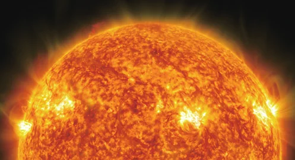
태양
태양계에서 유일하게 스스로 빛을 내는 천체이다. 주로 수소와 헬륨으로 이루어져 있다.
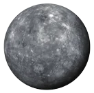
수성
대기가 거의 없어 낮과 밤의 온도 차가 매우 크고, 표면에 운석 구덩이가 많다.

금성
이산화 탄소로 이루어진 두꺼운 대기가 있어 표면 온도가 매우 높다.
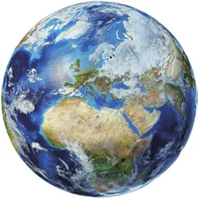
지구
태양계 행성 중 유일하게 표면에 액체 상태의 물과 생명체가 존재한다.

화성
표면이 붉게 보이고 과거에 물이 흘렀던 흔적이 있다. 극지방에는 얼음과 드라이아이스로 이루어진 흰색의 극관이 있다.
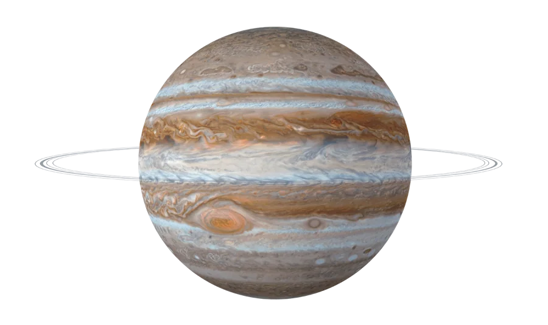
목성
주로 수소와 헬륨으로 이루어져 있다. 표면에는 적도와 나란한 줄무늬와 대기의 소용돌이인 대적점이 나타난다. 희미한 고리가 있고, 위성이 많다.
토성
주로 수소와 헬륨으로 이루어져 있고, 표면에는 적도와 나란한 줄무늬가 나타난다. 뚜렷한 고리가 있고, 위성이 많다.
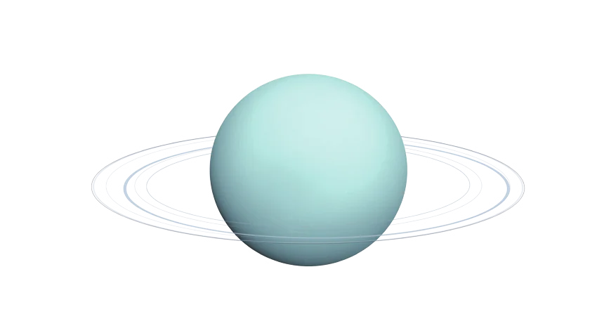
천왕성
청록색으로 보이고, 자전축이 공전 궤도면과 거의 나란하다. 희미한 고리와 위성들이 있다.
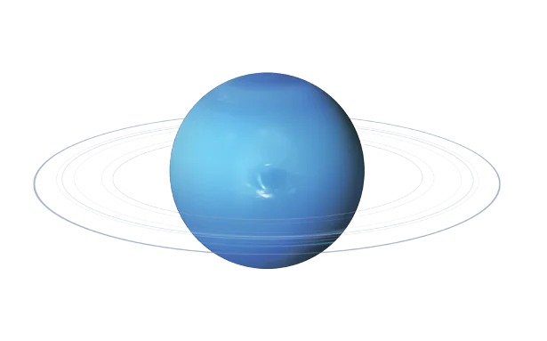
해왕성
청록색으로 보이고, 대기의 소용돌이인 대흑점이 있다. 희미한 고리와 위성들이 있다.
왜소 행성, 소행성, 혜성, 위성
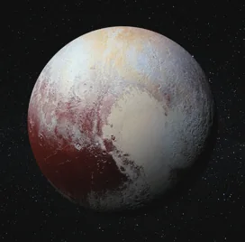
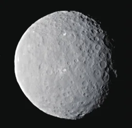
왜소 행성
태양 주위를 공전하는 천체 중 모양이 둥글지만 행성에 비해 질량과 크기가 작은 천체이다.
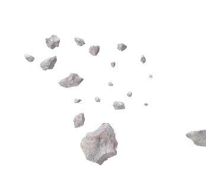
소행성
주로 화성과 목성의 공전 궤도 사이에서 태양 주위를 공전하는 천체이다. 모양이 불규칙하며 크기가 다양하다.
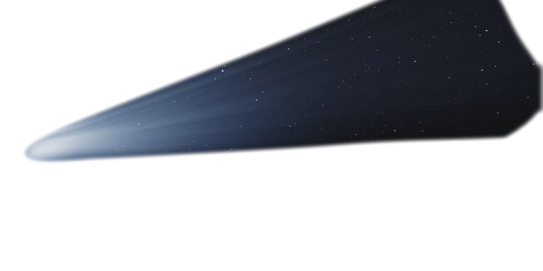
혜성
얼음과 먼지로 이루어져 있으며 대부분 태양 주위를 타원 궤도로 공전한다. 태양에 가까워지면 태양 반대쪽으로 꼬리가 생긴다.
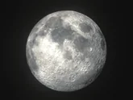
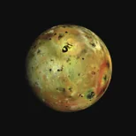
위성
행성 주위를 공전하는 천체이다. 달은 지구의 위성이다.
명왕성은 왜 행성이 아닐까?도움 영상으로 알아보기
생각해 보기행성에서 왜소 행성이 된 명왕성
명왕성은 1930년에 발견된 뒤 태양계의 아홉 번째 행성으로 불렸다. 그런데 2006년, 국제천문연맹(IAU)은 행성의 조건을 새로 정하면서 명왕성을 왜소 행성으로 분류하였다.
명왕성은 왜 행성이 되지 못했을까?
정리행성이 되기 위한 세 가지 조건
명왕성은 태양 주위를 공전하고 모양도 둥글지만, 크기와 질량이 작아 자신의 공전 궤도 주변에 있는 비슷한 천체들을 정리하지 못했다. 그래서 행성의 세 번째 조건을 만족하지 못해 왜소 행성으로 분류되었다.
천체 망원경을 이용하여 달과 행성 관측하기교과서 232~233쪽 · 탐구 (교사 설명 + 가상 관측)
탐구목표와 준비
목표 | 천체 망원경을 이용하여 달과 행성을 관측할 수 있다.
준비물 | 천체 망원경, 스마트 기기, 천체 관측 애플리케이션
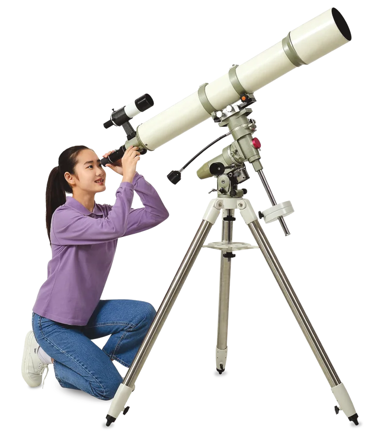
탐구 1 · 2관측 과정 알아보기
달 관측하기
- 오늘 밤에 달을 관측할 수 있는 시각과 방향을 스마트 기기로 미리 조사한다.
- 주위가 트여 있는 장소에 천체 망원경을 설치한다.
- 파인더 중앙에 달이 오도록 경통 방향을 조절한다.
- 접안렌즈로 달을 관측해 보자. (상현달일 때 관측하면 운석 구덩이를 더 입체적으로 볼 수 있다.)
- 접안렌즈에 스마트 기기의 카메라를 가깝게 하여 달을 촬영해 보자.
행성 관측하기
- 오늘 밤에 관측할 수 있는 행성과 그 시각, 방향을 스마트 기기로 미리 조사한다.
- 주위가 트여 있는 장소에 천체 망원경을 설치한다.
- 천체 관측 애플리케이션을 이용해 관측할 행성의 위치를 찾는다.
- 파인더 중앙에 행성이 오도록 경통 방향을 조절한다.
- 접안렌즈로 행성을 관측하고, 스마트 기기로 촬영해 보자.
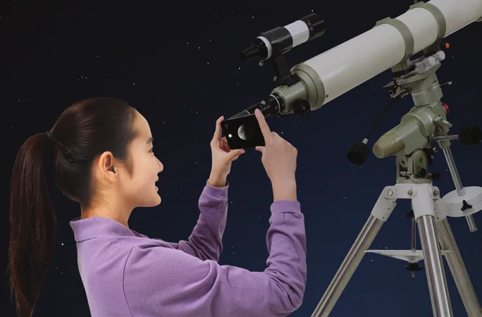
가상 관측스텔라리움 웹으로 달과 행성 관측하기
- 아래 버튼을 눌러 스텔라리움 웹(Stellarium Web)을 연다.
- 왼쪽 아래의 위치를 눌러 관측 장소를 우리 지역(부산)으로 맞춘다.
- 오른쪽 아래의 날짜와 시간을 오늘 밤 시각(예: 오후 9시)으로 바꾼다.
- 위쪽 검색 창에 Moon(달), Jupiter(목성), Saturn(토성)을 입력해 천체를 찾는다.
- 마우스 휠(또는 두 손가락)로 확대하여 달 표면, 목성의 줄무늬와 위성, 토성의 고리를 관찰한다.
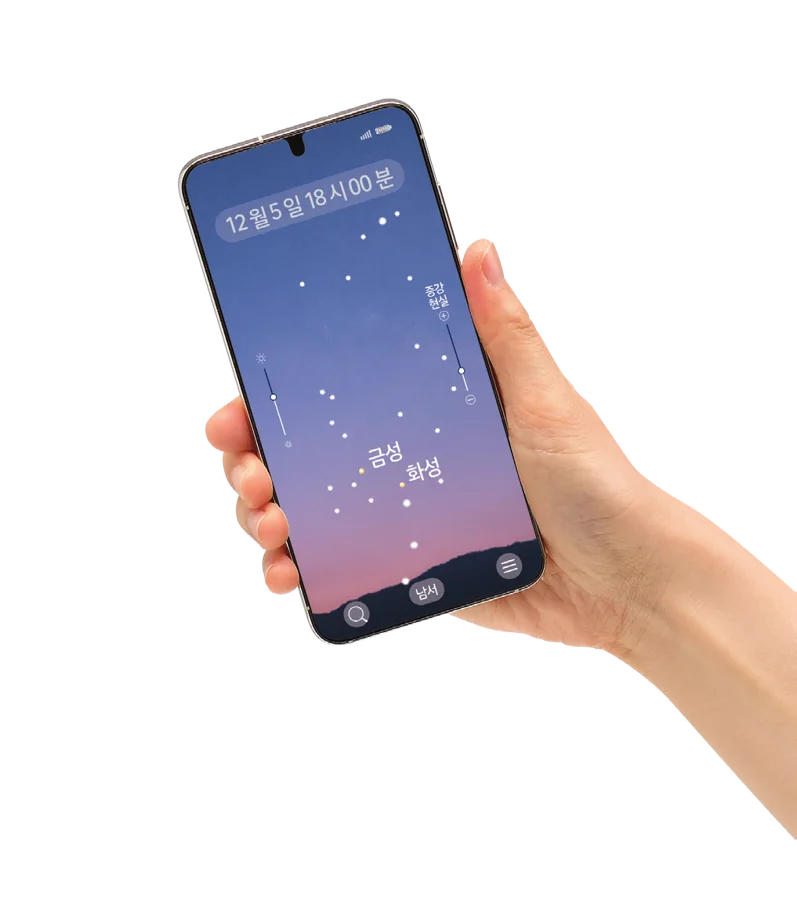
결과 및 정리관측한 내용 정리하기
| 관측 천체 | 모습 | 특징 |
|---|---|---|
| 달 | 달 표면의 어두운 부분과 밝은 부분이 보인다. 둥근 운석 구덩이가 많이 보인다. | |
| 토성 | 토성의 고리가 보인다. | |
| 목성 | 표면에 적도와 나란한 줄무늬가 보이고, 목성 옆에 밝은 점처럼 보이는 위성들이 보인다. |
확인하고 정리하기교과서 233쪽
스스로 확인하기
- 1태양계 구성 천체는 모두 스스로 빛을 낸다. ( ○, ✕ ) → ✕ 스스로 빛을 내는 천체는 태양뿐이다.
- 2주로 얼음으로 이루어져 있고 태양에 가까워지면 꼬리가 생기는 천체는 혜성(이)다.
- 3의사 결정 능력 | 행성과 소행성의 공통점과 차이점을 이야기해 보자.
행성과 소행성은 모두 태양 주위를 공전한다는 공통점이 있다. 차이점은 행성은 둥근 모양이지만, 소행성은 모양이 불규칙하다.
추가 확인 문제설명에 알맞은 천체를 골라 보자.
보기: 수성, 혜성, 달, 왜소 행성
- 1대기가 거의 없어 낮과 밤의 온도 차가 매우 크고, 표면에 운석 구덩이가 많은 행성 → 수성
- 2얼음과 먼지로 이루어져 있으며, 태양에 가까워지면 태양 반대쪽으로 꼬리가 생기는 천체 → 혜성
- 3지구 주위를 공전하는 지구의 위성 → 달
- 4모양이 둥글지만 행성에 비해 질량과 크기가 작은 천체 (예: 명왕성, 세레스) → 왜소 행성
O / X 확인문장이 옳으면 O, 옳지 않으면 X
③ 수성과 금성은 위성이 없다. ④ 명왕성은 둥글지만 궤도 주변을 정리하지 못했다. ⑥ 목성, 천왕성, 해왕성도 희미한 고리가 있다.
배운 내용 정리하기 · 태양계 구성 천체
| 천체 | 무엇의 주위를 공전할까? | 모양 | 예 |
|---|---|---|---|
| 태양 | - (태양계의 중심) | 둥글다 | - |
| 행성 | 태양 | 둥글다 | 수성 ~ 해왕성 (8개) |
| 왜소 행성 | 태양 | 둥글다 | 명왕성, 세레스 |
| 소행성 | 태양 | 불규칙 | 화성과 목성 궤도 사이 |
| 혜성 | 태양 (긴 타원 궤도) | 꼬리가 생김 | - |
| 위성 | 행성 | - | 달, 이오 |
다음 시간에는
‘2. 태양계 행성 분류’에 대해 알아보자. (교과서 234~235쪽)